cartoons.de
cartoons.deDie Entstehung der Dark-Wars-Cartoons
Technik von damals: Dieses Tutorial beschreibt, wie ich die Dark-Wars-Strips um 2006 gezeichnet habe, also mit Bleistift, Pauspapier, Fineliner, Kopierer, Scanner und Photoshop 7. Die Bilder stammen aus dem Beitrag „Die Entstehung von Dark Wars“, der im Offiziellen Star Wars Magazin Nr. 48 (2007) erschien. Heute arbeite ich teilweise anders (mehr dazu im Comic-Tutorial), die Grundschritte sind aber geblieben.
Hallo, liebe Comicfreunde! Habt ihr nicht auch schon mal eine lustige Idee oder einen Witz gehabt, den man gut in einen Comic verwandeln könnte? Bestimmt! Dann versucht euch einmal daran, das ist gar nicht so schwer. Vor allem Star Wars mit seinem komplexen Universum eignet sich prima dafür, wie die Dark-Wars-Strips zeigen, die ich für das Offizielle Star Wars Magazin (OSWM) gezeichnet habe.
Hier schildere ich, welche Schritte nötig waren, um einen Comic zu zeichnen. Grob gesagt gibt es drei:
Die Idee
Als Erstes muss natürlich eine Idee her. Ohne Idee kein Comic. Ich wollte meist etwas Bestimmtes zeichnen und überlegte nur, in welchen Kontext ich es bringen konnte, damit daraus ein Comic wurde. Meine Dark-Wars-Serie hat damit angefangen, dass ich einen Sternenzerstörer zeichnen wollte (meiner Meinung nach neben der Slave I das coolste Raumschiff). Außerdem wollen alle Charaktere irgendwann einmal gezeichnet werden (hier Yoda) und bestimmte Filmsituationen (hier das Jedi-Training in Episode V).
Um einen Witz aufzubauen, ließ ich mir die Eigenschaften der handelnden Personen durch den Kopf gehen oder versuchte, eine Filmszene durch den Kakao zu ziehen. Im OSWM 44 war für mich ganz klar, dass ein Sternenzerstörer gigantische Ausmaße hat. Und wer ein großes Auto hat, weiß, wie schwierig es ist, damit Parkplätze zu finden. Beim Jedi-Training dachte ich darüber nach, was Luke anstelle von Darth Vader in der Höhle hätte erwarten können, wovor er sich fürchtet. Da Mäuse bei vielen Menschen Angst auslösen, dachte ich, der Held könnte sich gut vor einer Maus fürchten :)
Nach der Pointe überlegte ich rückwärts die vorherige Handlung (in dieser Serie beschränkte ich mich auf höchstens drei Bilder): Wie führe ich die Personen aus einer normalen Situation zu meiner Pointe? Stand die Idee, skizzierte ich sie kurz, damit sie nicht verloren ging.
Auf dieser Skizze sollten Yoda und Luke zu sehen sein. Meine Motivation war hier a) Yoda zu zeichnen und b) eine dunkle Silhouette vor einem hellen Höhleneingang. Ich dachte, das sähe sicher gut aus. Mit der Pointe hatte ich so meine Schwierigkeiten …
Die AT-ATs hatten mich schon als Kind unheimlich beeindruckt, und natürlich mussten sie auch in einem Comic verarbeitet werden. Als Idee habe ich es zunächst mit drei Bildern schnell hingekrakelt. Später passte ich es dem allgemeinen Format an und malte ein großes Panel (siehe OSWM 46).
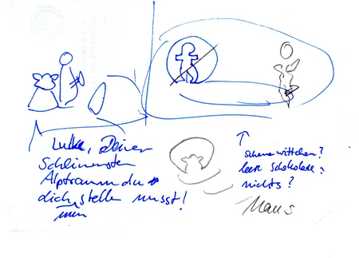
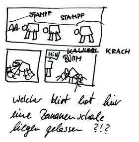
In meinem Unterbewusstsein trug ich die Idee dann mit mir herum und verfeinerte sie langsam, bis ich mich hinsetzte und anfing, den Comic zu zeichnen.
Die Zeichnung
Auf geht’s: Die interessanteste Aufgabe stand jetzt an – das Zeichnen! Die Figuren und Hintergründe mussten alle gezeichnet werden. Ich skizzierte die Figuren mit einem einfachen, möglichst weichen Bleistift (etwa HB) in verschiedenen Varianten. Dabei merkte ich, was gut und was schlecht aussah. Dann zeichnete ich alle Elemente, die ich für meinen Comic brauchte: die Figuren in allen nötigen Posen und die Hintergründe (meist etwas größer als benötigt).
Als Vorlage dienten mir die „Art of Star Wars“-Bücher und die Enzyklopädien: Dort kann man sich die Figuren mit allen Details in Ruhe anschauen. Natürlich ließ sich das Zeichnen eines neuen Comics auch immer mit einem Star-Wars-Abend verbinden :)
Was mir immer sehr schwerfiel, war das Zeichnen von Menschen. Da noch nie jemand einen Außerirdischen gesehen hat, ist es nicht so schwer, diesen glaubhaft zu zeichnen. Menschen jedoch (und dann noch in bestimmten Posen) waren für mich das Schwierigste überhaupt. Abhilfe schaffte eine kleine Holzmaquette (gibt es in gut sortierten Zeichenbedarfsläden oder sogar bei IKEA), die ich für jede Figur zurechtbog und abzeichnete, zumindest für die groben Umrisse. Auf dem Foto steht sie zwischen meinem damaligen Zeichenzubehör.
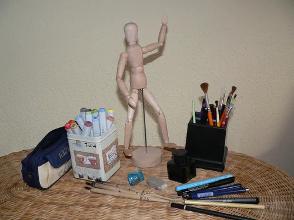
Hier die Skizzen zum Yoda-Comic aus diesem Heft: Yoda, Luke, der Hintergrund und eine frühe Variante, in der Luke vor der Maus zurückschreckt.
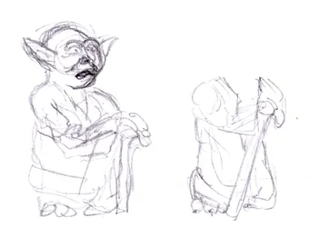
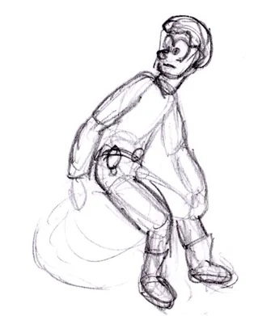
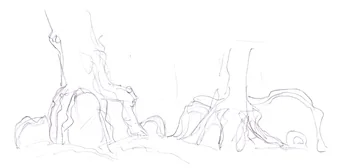
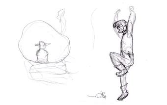
Dann nahm ich Pauspapier und zeichnete darauf zuerst die Comic-Panels (also die Rahmen). Millimeterpapier half, schräge Linien zu vermeiden. Als Nächstes schrieb ich den Text, damit er später nicht die Figuren überdeckte; ein liniertes Papier unter dem Pauspapier half beim Schreiben. Anschließend zog ich die fertigen Skizzen, die meist noch etwas detailarm waren, mit einem Fineliner (Pigmenttusche) oder mit Feder und Tinte zur endgültigen Zeichnung durch.
Wenn ich mir sicher war, wie es später aussehen sollte (oder den Comic nicht am Computer nachbearbeiten wollte), zeichnete ich die Figuren direkt in die Panels und legte anschließend den Hintergrund unter das Pauspapier, um ihn hinter den Figuren durchzupausen. In diesem Beispiel habe ich die Figuren getrennt gezeichnet, weil ich mir nicht sicher war, ob mir die erste Version gefiel. Also musste ich den Hintergrund komplett in das Panel zeichnen und konnte die Figuren erst am Computer in die Panels legen.
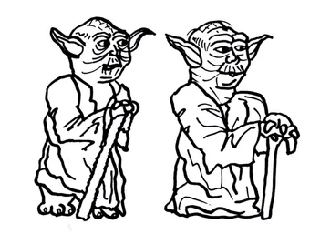
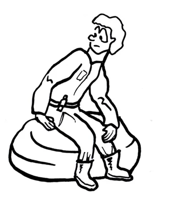
Hier war mir der linke Yoda im Gesicht zu fein, sein Umhang zu undeutlich und auch sein Ausdruck und seine Haltung ziemlich schlecht, sodass ich ihn erneut zeichnete (rechts daneben). Der Hintergrund entstand ohne Figuren, abgesehen von Yodas Silhouette im Höhleneingang:
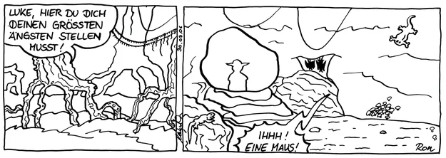
Die groben Linien und Umrisse tuschte ich meist mit einer Feder (das sieht dynamischer aus), für Gesichter und feine Linien griff ich zu Stiften in unterschiedlichen Stärken (0,1 bis 0,7 mm). War die Zeichnung fertig, kopierte ich das Pauspapier im Copyshop, um normales weißes Papier zu erhalten, das ich anschließend kolorieren oder einscannen konnte.
Ein zweites Beispiel, der Strip aus OSWM 45: erst die Bleistiftskizze, dann die Tuschezeichnung, aus der nach der Kolorierung der fertige Comic wurde.
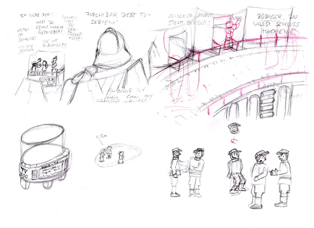
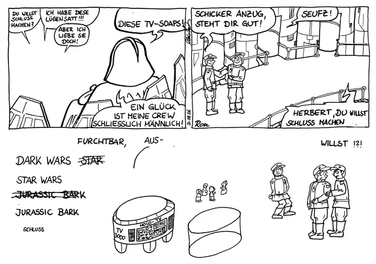
Die Kolorierung
Ein farbiger Comic sieht natürlich besser aus als einer in Schwarz-Weiß. Kolorieren ist leider auch ziemlich zeitaufwendig. Am einfachsten lässt sich ein Comic auf dem Papier kolorieren, zum Beispiel mit Copic-Markern, Aquarell- oder Acrylfarben. Am Computer ist es am schwierigsten, dort gibt es dafür die meisten Möglichkeiten der Nachbearbeitung. Ich bin irgendwann auf den Computer umgestiegen: Die Dark-Wars-Reihe ist meist mit Adobe Photoshop koloriert.
Copic-Marker
Allgemeine Infos zu Copic-Markern und Beispiele für verschiedene Kolorierungen stehen im Comic-Tutorial. Der Sternenzerstörer-Comic in OSWM 44 ist mit Copic-Markern koloriert, nur den Sternenhintergrund fügte ich am Computer ein (meinem schwarzen Copic-Marker zuliebe).
Adobe Photoshop
Ich arbeitete damals mit Photoshop in Version 7, und Tutorials gibt es zuhauf im Internet. Grob gesagt koloriert man einen Comic, indem man neben der Schwarz-Weiß-Zeichnung eine zweite Ebene einfügt, die man in Photoshop kolorieren und unter die Zeichnung legen kann. So liegt die Zeichnung darüber, und die schwarzen Linien trennen die Farben darunter.
Bei den Dark-Wars-Comics spielte ich meist auch noch etwas mit den verschiedenen Effekten in Photoshop. Bei diesem Yoda-Comic ist transparenter Nebel zu sehen, und dem Höhleneingang versuchte ich ein gleißendes Licht zu verpassen.
Schritt für Schritt: der Yoda-Comic
Zuerst der Hintergrund. Die Schwarz-Weiß-Zeichnung (1) scannte ich ein und kolorierte sie zunächst einfarbig (2). Anschließend bekamen die Bäume einen harten Schatten (3), damit sie plastischer wirken, und die schwarzen Linien hellte ich in der Hintergrundfarbe auf (3), damit sich die Figuren später deutlicher vom Hintergrund absetzen.
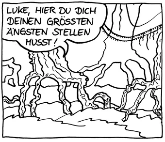
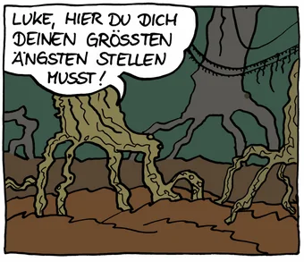
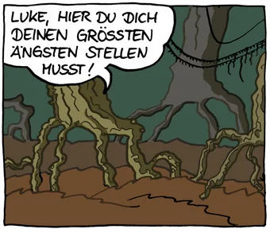
Die Figuren kolorierte ich genauso wie den Hintergrund. Danach ließen sie sich am Computer gut zurechtschieben, skalieren und in die Panels einkopieren (3). Weil ich mit Photoshop arbeitete, konnte ich außerdem weitere Ebenen einfügen: In (4) sind das der Nebel und die Schatten der Figuren.
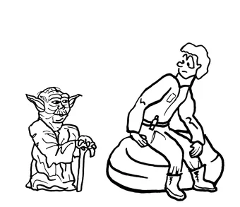
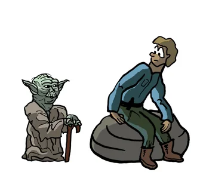
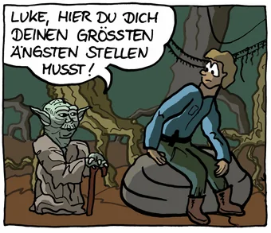
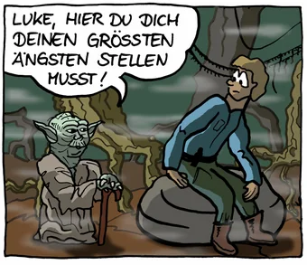
Und so sah der fertige Comic aus:

So, jetzt habe ich euch meine Herangehensweise bei der Comic-Erstellung geschildert, vielleicht probiert ihr es auch einmal! Es gibt so viele Charaktere bei Star Wars und so viele Geschichten, dass auch euch sicher etwas Lustiges einfällt. Zeigt eure Comics oder Cartoons dann der Öffentlichkeit, zum Beispiel bei toonsUp, der Comic-Community, auf der ihr auch weitere Comics von mir findet.
← Zurück zu den Dark-Wars-Cartoons